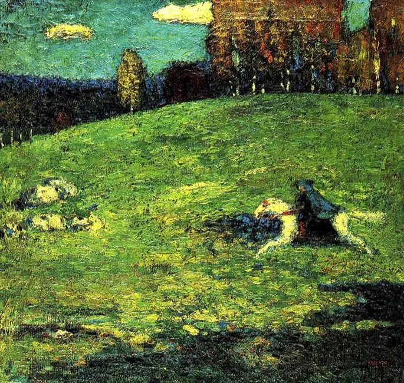

O cavaleiro azul (1903) e sua Biografia

O Cavaleiro Azul (em alemão: Der Blaue Reiter) é uma pintura a óleo sobre tela realizada pelo artista russo Wassily Kandinsky em 1903. Uma das mais importantes obras do pintor russo, do início do século XX, mostra um cavaleiro vestido com uma capa azul, a cavalgar por um campo verde.